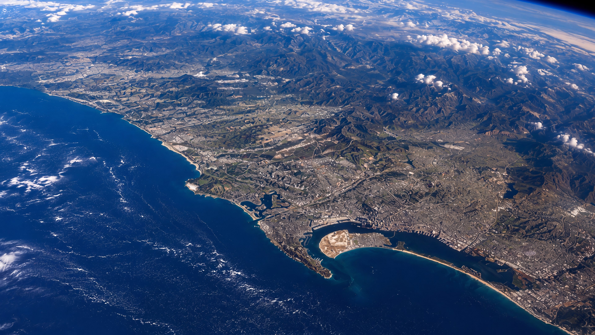
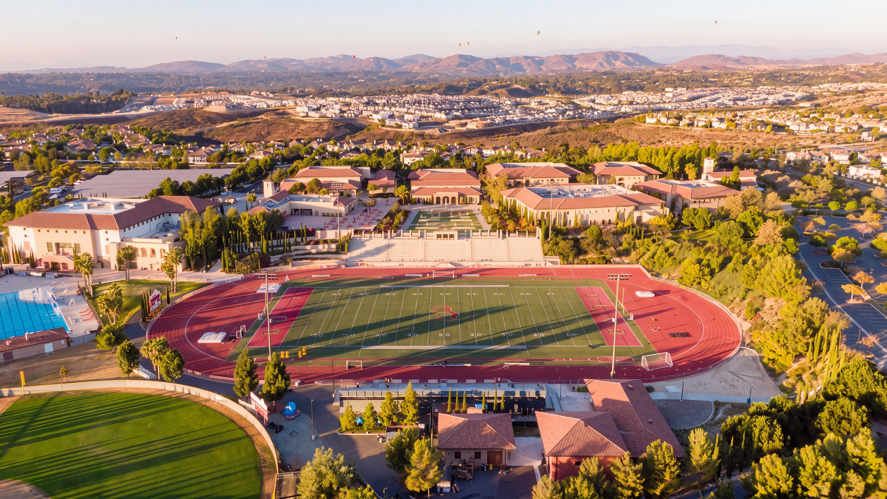
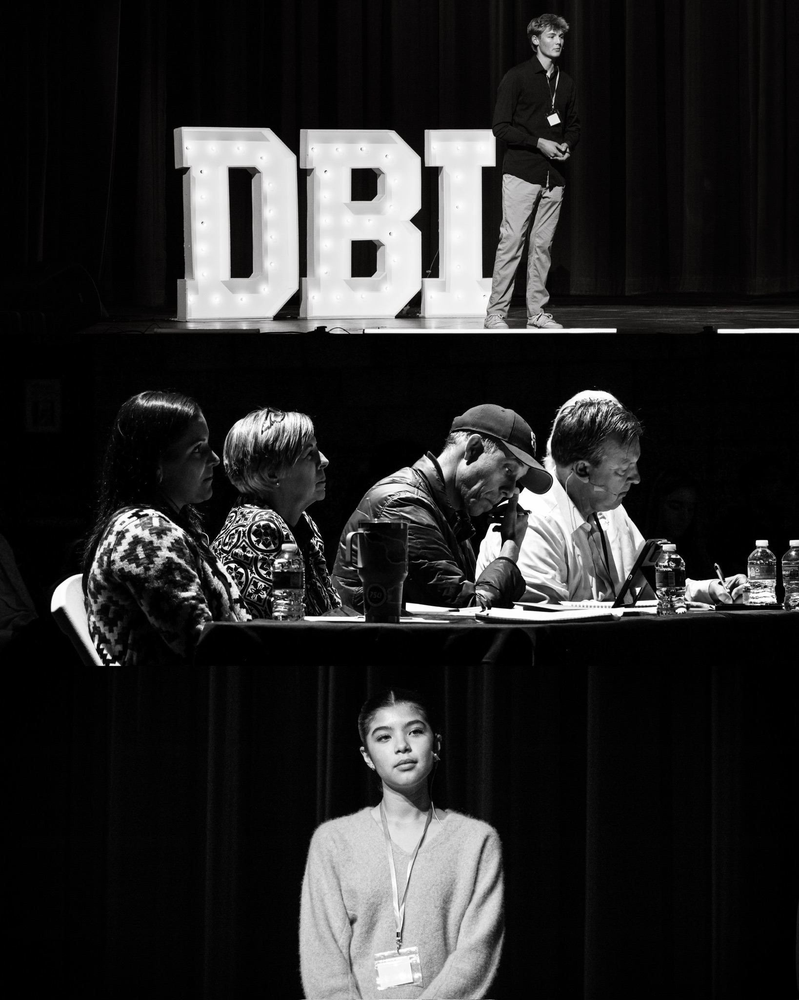

Cathedral Catholic High School
Dons Business Institute
Learn how business works. Then go build one.
Explore the Flagship Program →
The Dons Business Institute at Cathedral Catholic.
Real-world
learning. Ideas with purpose.


Dons Business Institute brings business into the room after school. In our selective Flagship Program, working industry professionals teach Cathedral Catholic students to advise a real company—and earn the opportunity to build their own.

Our main program
The Flagship Program
After-school sessions taught by founders, investors, and business
leaders.
Business foundations in the fall. Selected students build ventures in the
spring.
The Flagship experience
Two defining challenges.
One demanding journey.
First, advise a business that already exists. Then, for students selected to continue, build one of your own.

Fall · The Flagship capstone
The Case Competition
A real company brings the problem. Your team brings the recommendation.
Students research the business, compare strategic options, work through the numbers, and present their case on stage to company leadership and judges.
In 2025, Surfline challenged teams to choose an expansion market: Indonesia, South Africa, or Brazil. Students had to defend both where the company should go and how it could succeed.
Inside the Case Competition
Spring · The entrepreneurship finale
The Dons
Startup Summit
This time, it’s your company.
After a separate pitch and interview process, selected Flagship students develop a business with guidance from industry entrepreneurs and USD MBA mentors.
At the Summit, they pitch their ventures to an experienced judging panel in front of families and the school community, competing for awards that help them keep building.
2026 Summit 10 student companies · 19 founders · $19,000 in awards
Explore the Startup SummitSelective admission · Fall entry only
A rigorous application process.
A committed cohort.
Flagship admission requires a reviewed written application, an invitation to interview for selected applicants, and a final selection for a limited cohort. Interest alone does not guarantee a place.
Applications open only at the start of the school year in the fall. There is no year-round enrollment. Continuing into spring entrepreneurship requires a separate selection process for current Flagship students.
Understand the admissions processA smaller offshoot of DBI
The Finance Program
A focused, 25-student program in financial literacy and investing. It has its own projects and does not include Flagship’s Case Competition, entrepreneurship term, or Startup Summit.